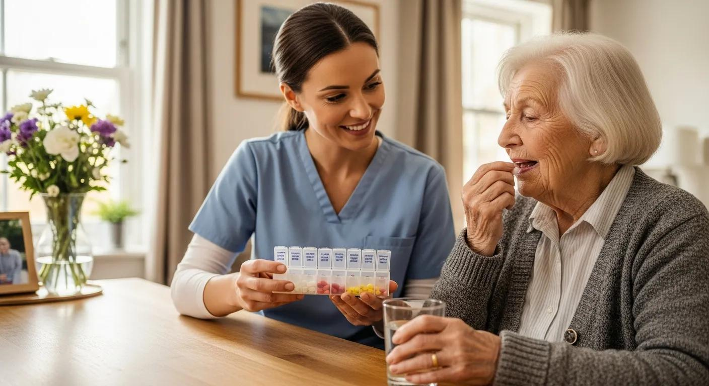

Lembretes de horários
Ajuda a lembrar os horários dos medicamentos cadastrados.

Um sistema pensado para ajudar idosos e cuidadores a organizar os horários dos medicamentos e tornar a rotina de cuidados mais simples.

Idosos e cuidadores conectados.

Somos uma iniciativa nascida no ambiente acadêmico, impulsionada pelo desejo de transformar o cuidado e a gestão da saúde de pessoas idosas por meio da tecnologia.
Nosso projeto foi idealizado ao identificarmos os desafios diários enfrentados por familiares e cuidadores para acompanhar a rotina de medicamentos, consultas e o bem-estar de quem amam.
Conheça as funcionalidades →Recursos pensados para ajudar na rotina de cuidados.
Ajuda a lembrar os horários dos medicamentos cadastrados.
Organização das informações dos medicamentos e dos horários prescritos.
Facilita o acompanhamento da rotina pelo idoso e por seu cuidador.
A tecnologia pode ser uma grande aliada na organização dos cuidados diários, aproximando idosos, familiares e cuidadores.

Tecnologia a favor do bem-estar.
Nosso objetivo é oferecer apoio para uma rotina de cuidados mais organizada.
Uma proposta que busca tornar a organização dos medicamentos mais simples para as famílias.
Mais organização Um objetivo do projetoO sistema foi pensado para aproximar idosos e cuidadores por meio de informações organizadas.
Mais conexão Um propósito do ZELOUma ideia que utiliza a tecnologia como apoio à rotina de cuidados com os idosos.
Mais praticidade Uma proposta de cuidadoSaiba mais sobre a proposta do nosso sistema.
Para apoiar idosos, familiares e cuidadores na organização da rotina de medicamentos.
A proposta inclui lembretes dos horários cadastrados, conforme os recursos implementados.
O projeto prevê o registro das informações dos medicamentos e dos horários orientados pelo profissional de saúde.
Não. O sistema é uma ferramenta de apoio à organização e não substitui orientações profissionais. Nunca altere doses ou horários sem orientação adequada.
Ficou com alguma dúvida ou quer saber mais sobre a proposta? Envie sua mensagem pelo formulário.
Mais cuidado, organização e apoio para idosos e cuidadores.